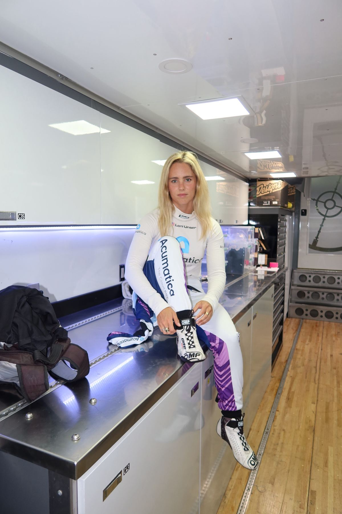

Who is Loni?
With a background in line-finding sports, including ski racing, Loni Unser started racing cars in 2017 and has shown promise early on in sports car racing. She has raced the Spec Miata classes, NASA, and the MX-5 Cup, as well as a variety of marques in the World Racing League and Porsche Sprint Challenge, among others. In 2022, she raced the Pikes Peak International Hill Climb and has participated every year since.
The young driver carries her family name to a new generation of fans. Her grandfather was Jerry Unser, the first of the famous Unsers to race at the Indianapolis Motor Speedway. From then on, the Unser family has won the prestigious Indianapolis 500 nine times and become known as “The First Family” of American auto racing.
In 2021, Loni became the first woman to finish in the top 10 back-to-back races in the highly competitive Mazda MX-5 Cup. That year, she also [continue with the rest of your bio here].